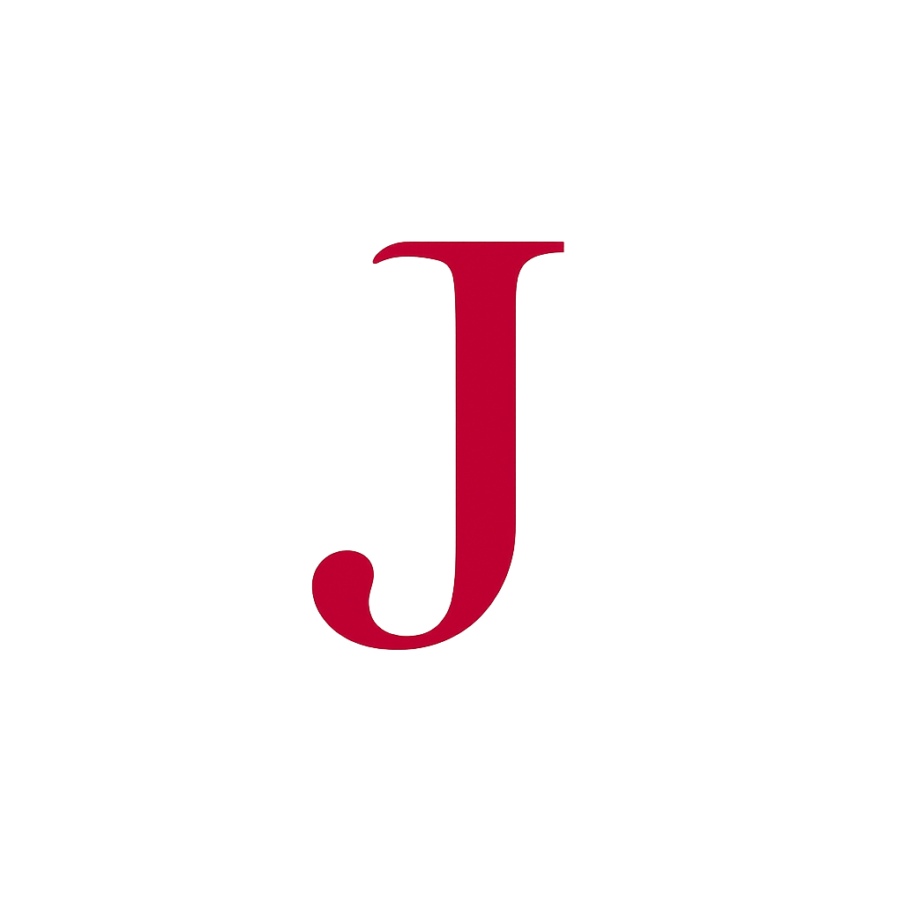

Practical tools, built in my spare time.
Hi, I'm John. I enjoy building simple, practical tools that solve real problems. This site is where I share the projects I work on outside of my day job. Everything here is built by me — from the code to the website itself.
A Windows tool for renaming audiobook files quickly and safely.